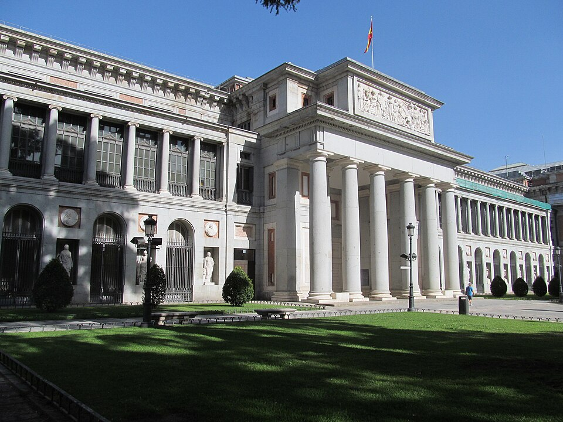

Abre el Real Museo de Pinturas en el paseo del Prado
El edificio de Villanueva, en el paseo del Prado, ha abierto hoy sus puertas como Real Museo de Pinturas. Poco más de trescientos cuadros de las colecciones reales, con Velázquez y Goya a la cabeza, quedan a la vista del público.

Madrid cuenta desde hoy con una casa para la pintura. El Real Museo de Pinturas ha abierto sus puertas en el hermoso edificio que don Juan de Villanueva levantó en el paseo del Prado, entre San Jerónimo y el Jardín Botánico, y que las desdichas de la guerra habían dejado maltrecho. Desde primera hora se vio llegar a curiosos, artistas y gentes de todos los estados, que recorrían las salas con ese silencio entre respetuoso y asombrado de quien entra por primera vez donde antes solo entraban reyes. En las paredes, ordenados y rotulados, cuelgan poco más de trescientos cuadros de las colecciones reales.
La muestra que hoy se ofrece es toda de escuela española, y basta y sobra: allí están las Meninas y los retratos ecuestres de don Diego Velázquez, las vírgenes y los niños de Murillo, los ásperos apóstoles de Ribera, y las obras de don Francisco de Goya, pintor de cámara, que vive aún entre nosotros y puede ver sus lienzos colgados en un museo. Se anuncia que en salas venideras se irán mostrando las demás escuelas que atesoran los palacios: los Tizianos que amó el emperador Carlos, los maestros flamencos e italianos, y las fantasías del Bosco que coleccionó el rey don Felipe II.
El edificio tiene su propia historia. Villanueva lo trazó en tiempos del rey don Carlos III para gabinete de ciencias naturales, y la guerra contra el francés lo convirtió en cuartel y almacén, con daños que alcanzaron hasta los plomos de sus cubiertas. Devolverlo a la vida ha sido empeño de la corona: se recuerda con gratitud a la reina doña María Isabel de Braganza, que impulsó la obra y no ha alcanzado a ver este día, pues murió el año pasado. El rey don Fernando VII ha destinado al museo pinturas de los sitios reales, y su nombre queda unido a la fundación.
En las salas se oían hoy conversaciones que valen por una crónica: un estudiante explicaba a su madre quién era aquel bufón retratado por Velázquez; unos pintores jóvenes discutían a media voz, delante de las Meninas, sobre dónde está la luz y dónde el milagro; un veterano de la guerra se detuvo largo rato ante los cuadros sin decir palabra. El museo abrirá al público un día por semana, los miércoles, quedando los demás reservados a copiantes y estudiosos, y la entrada será franca. Los guardas repetían a todos la consigna nueva: mirar cuanto se quiera, tocar nada.
Otras naciones nos habían tomado la delantera en esto de abrir al público las galerías de sus príncipes, y dolía que España, tan rica de pinceles, guardara sus tesoros donde nadie los veía. Desde hoy, cualquier vecino con un miércoles libre puede plantarse delante de las Meninas, y ese solo hecho cambia la ciudad. Los cuadros no se han movido de España: han mudado de dueño de mirada, que es mudanza mayor. Este diario celebra la jornada y deja escrito un voto: que el museo crezca, que las salas prometidas se abran pronto, y que ningún tiempo venidero devuelva estas puertas a la llave.